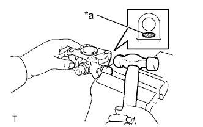

PROPELLER SHAFT ASSEMBLY > DISASSEMBLY |
| 1. REMOVE REAR PROPELLER SHAFT UNIVERSAL JOINT SPIDER BEARING |
Place matchmarks on the flange yoke and sleeve yoke.
| *1 | Matchmark |
 |
Using a brass bar and a hammer, slightly tap in the spider bearing outer races.
Using 2 screwdrivers, remove the 4 snap rings from the grooves.
Using SST, remove the spider bearing from the sleeve yoke.
 |
Clamp the spider bearing outer race in a vise and tap off the propeller shaft with a hammer.
| *a | Hammering Point |
Install the 2 removed spider bearing outer races to the universal joint spider.
Using SST, remove the bearing from the yoke.
|  |
Clamp the outer bearing race in a vise between aluminum plates and tap off the yoke with a hammer.
| *a | Hammering Point |
Remove the universal joint spider.